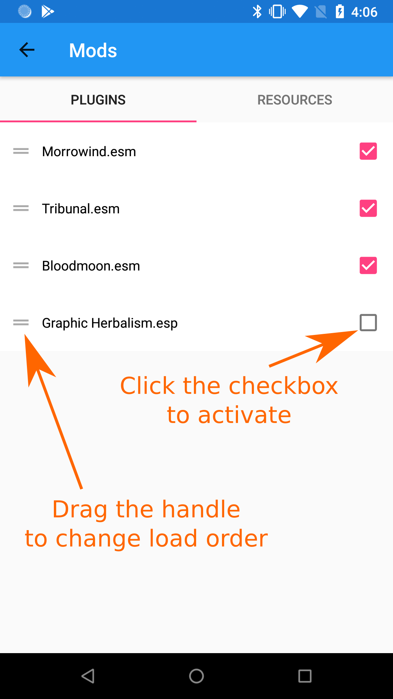

1) Extract your mod .zip, .rar or .7z archive
2) Copy mod files (.esm, .esp, .omwaddon, .bsa) and resources (Meshes, Textures, etc) to your "Data Files" folder.
3) Activate the mod from the "Mods..." menu

4) If the mod contains any .bsa files, you can activate them from the "Resources" tab.